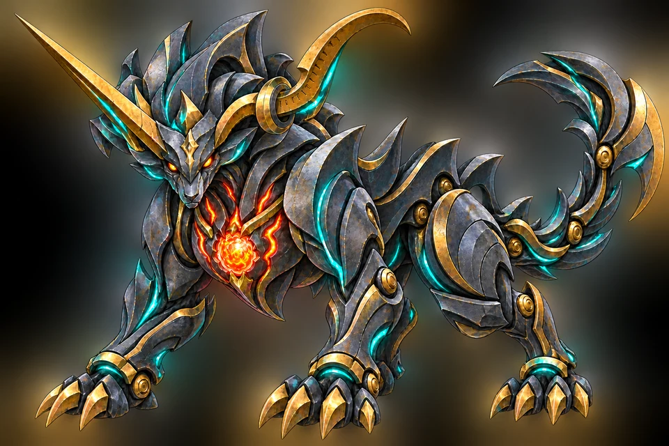

JP BOSS ARCHIVE · 첫 실전 프로토타입
수학 실력을
데미지로 바꿉니다.
제한시간+보스 HP+데미지+콤보
세 문제를 연속으로 맞히는 훈련에서 끝나지 않습니다. 시간 안에 더 많은 문제를 해결하고, 정확도를 유지해 실제로 보스를 쓰러뜨립니다.

D09철갑 방어 · 3단계
현재 플레이 가능 · BOSS 2.2 #01
미분의 철갑수
다항함수를 빠르게 미분해 38초 안에 철갑을 깨세요. 기본·응용·심화로 문제가 강해지고, 클리어할수록 다음 전투의 시간만 짧아집니다.
- 지배 영역
- 다항함수의 미분
- 보스 스킬
- 철갑 방어 · 3단계
- 승리 조건
- 38초 안에 HP 2600 소진
BOSS ROSTER 2.2
64종의 보스를 순서대로 깨웁니다.
미적분 28종과 기하 36종. 이름만 다른 복제품이 아니라 외형과 전투 규칙이 수학 개념을 드러내도록 설계했습니다.전체 설계64 / 64
실제 전투 가능6 / 64
다음 제작연속의 봉합사